GitHub nos permite guardar nuestros proyectos en internet. Para subir nuestros archivos, primero debemos tener una cuenta en GitHub y crear un repositorio donde guardaremos nuestro trabajo.
SSH es una forma segura de que GitHub reconozca nuestro computador sin tener que escribir la contraseña cada vez que subimos archivos. Para hacerlo necesitamos haber instalado y configurado Git (pasos 1 a 4, en ¿Qué es Git?) y tener una cuenta (paso 5, en ¿Qué es GitHub?). Esta conexión se hace una sola vez en cada computador.
Una clave SSH son dos archivos: una clave privada, que es secreta y se queda en nuestro computador, y una clave pública, que le entregamos a GitHub. Abrimos Git Bash y escribimos este comando, cambiando tucorreo@ejemplo.com por el correo de nuestra cuenta de GitHub:
ssh-keygen -t ed25519 -C "tucorreo@ejemplo.com"
Git Bash nos hace unas preguntas. En la primera (Enter file in which to save the key) presionamos Enter para aceptar el lugar que propone. En las dos siguientes (Enter passphrase y Enter same passphrase again) podemos presionar Enter para dejar la contraseña vacía, o escribir una contraseña extra si queremos más seguridad.
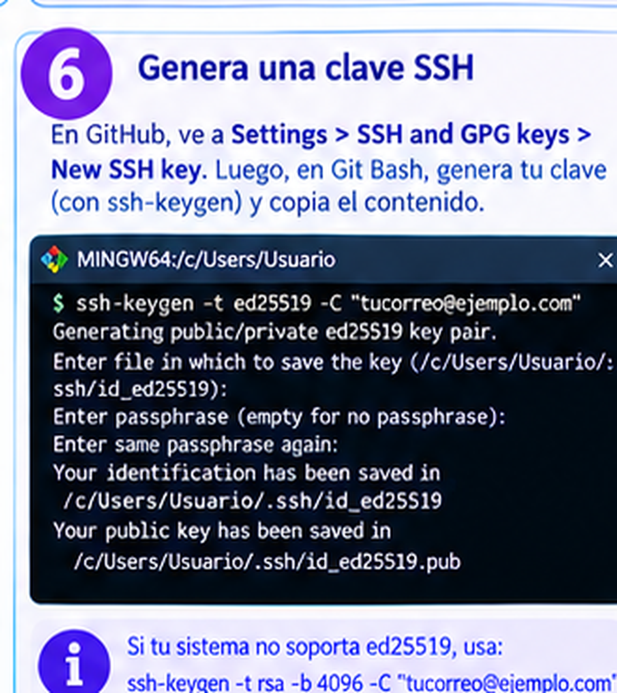
Cuando termina, los mensajes Your identification has been saved y Your public key has been saved indican que se crearon los dos archivos: id_ed25519 (la clave privada, que nunca debemos compartir) e id_ed25519.pub (la clave pública, que sí le damos a GitHub). Si el sistema no acepta el tipo ed25519, usamos este comando alternativo:
ssh-keygen -t rsa -b 4096 -C "tucorreo@ejemplo.com"
Ahora mostramos la clave pública para copiarla:
cat ~/.ssh/id_ed25519.pub
Aparece una línea larga que empieza con ssh-ed25519 y termina con nuestro correo. La seleccionamos completa con el mouse y la copiamos (clic derecho y luego Copy).
Entramos a GitHub, hacemos clic en nuestra foto de perfil (arriba a la derecha) y elegimos Settings. En el menú de la izquierda buscamos SSH and GPG keys y hacemos clic en el botón verde New SSH key.
En el campo Title escribimos un nombre para reconocer el computador, por ejemplo "Mi PC". En el campo Key pegamos la clave pública que copiamos. Por último hacemos clic en el botón verde Add SSH key. GitHub puede pedirnos la contraseña de la cuenta para confirmar.
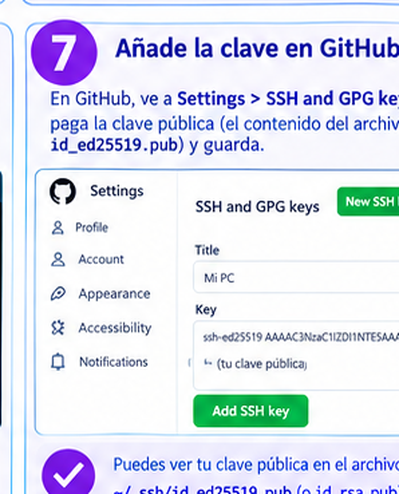
Volvemos a Git Bash y escribimos:
ssh -T git@github.com
La primera vez puede aparecer la pregunta Are you sure you want to continue connecting (yes/no)?. Escribimos yes y presionamos Enter.
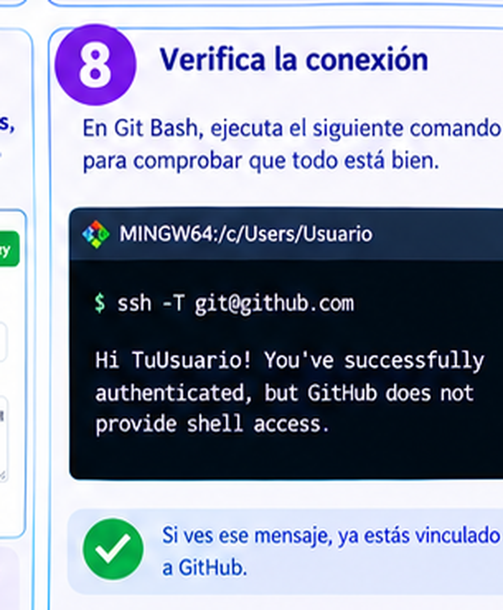
Si aparece el mensaje Hi TuUsuario! You've successfully authenticated, but GitHub does not provide shell access, todo funcionó: GitHub ya nos reconoce. La parte que dice que GitHub no da acceso a la terminal es normal y no es un error. Si en cambio aparece Permission denied (publickey), revisamos que hayamos copiado la clave pública completa y que hayamos hecho clic en Add SSH key.
Cuando conectamos nuestro proyecto con GitHub (paso 6 de los pasos para subir archivos), en la página del repositorio elegimos la pestaña SSH y copiamos esa dirección. Es parecida a git@github.com:usuario/taller1.git y es la que escribimos en lugar de URL_DEL_REPOSITORIO.
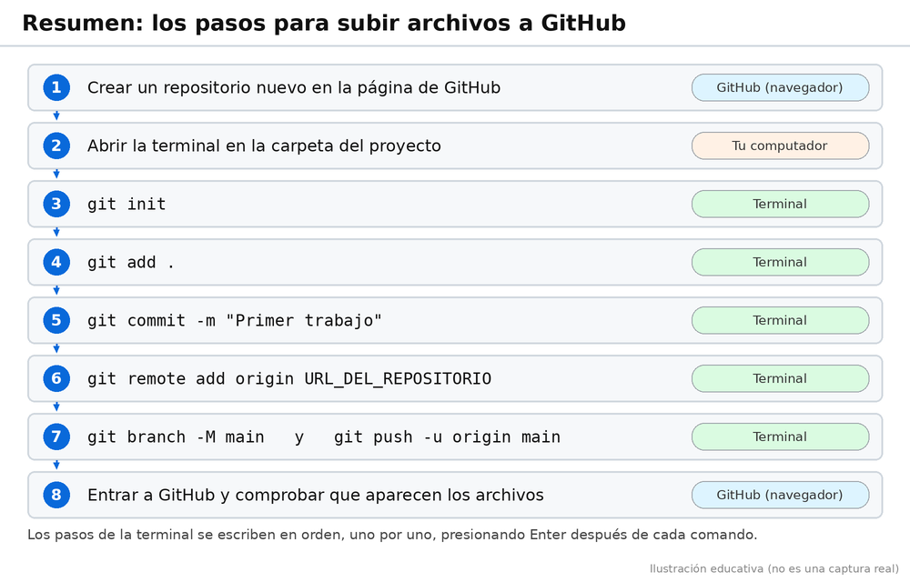
Ingresamos a GitHub y creamos un repositorio nuevo. Allí se guardarán los archivos de nuestro proyecto.
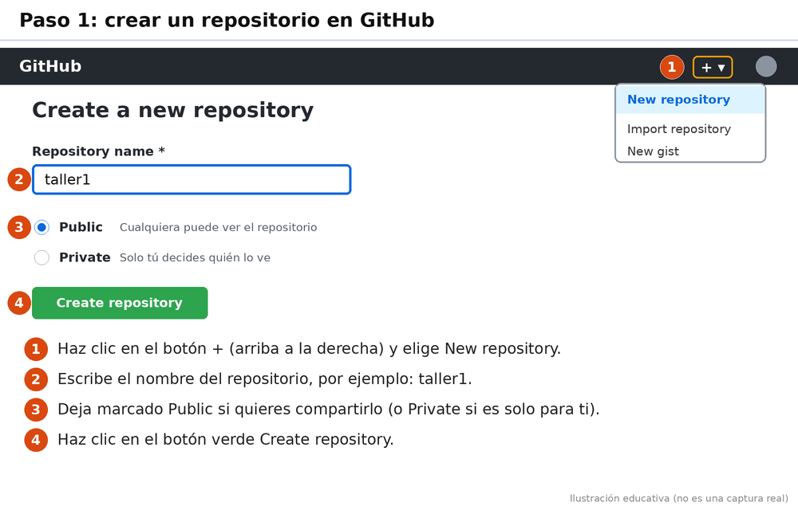
Abrimos la terminal en la carpeta donde tenemos nuestros archivos HTML.
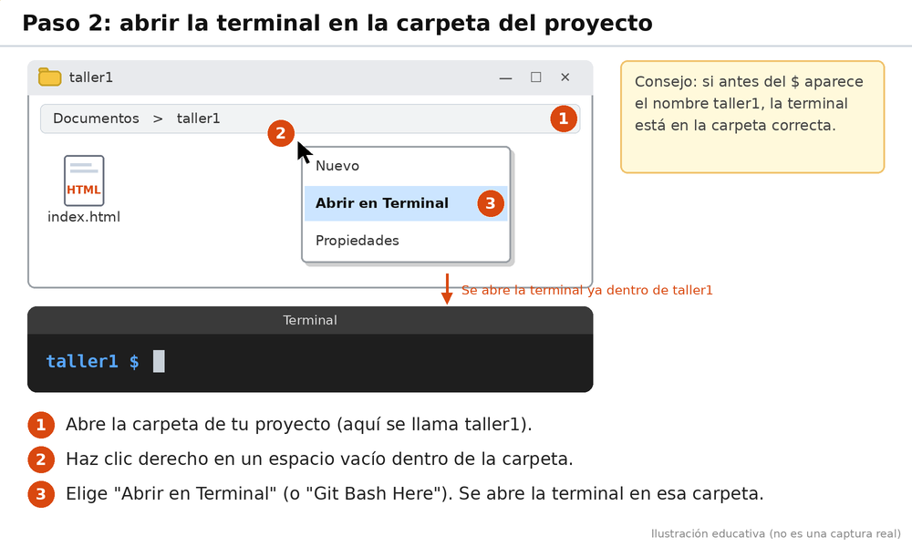
Escribimos el siguiente comando para iniciar Git en la carpeta.
git init
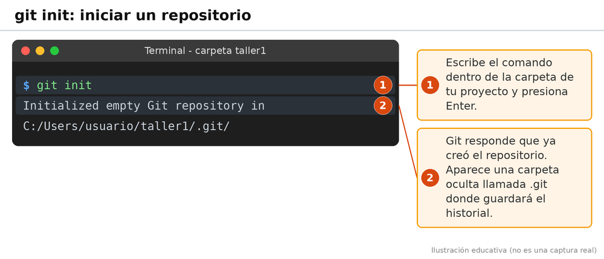
Utilizamos este comando para preparar los archivos que queremos subir.
git add .
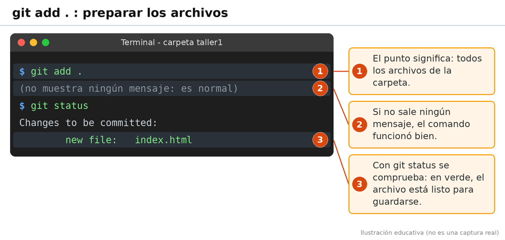
Registramos los cambios con un mensaje que nos permita identificar nuestro trabajo.
git commit -m "Primer trabajo"
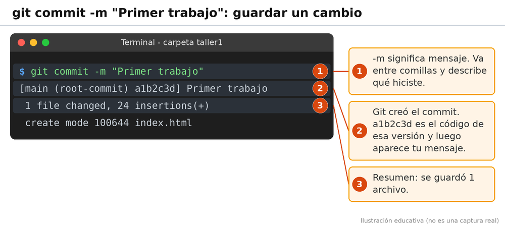
Conectamos nuestro proyecto local con el repositorio que creamos en GitHub. Debemos reemplazar la dirección de ejemplo por la URL verdadera de nuestro repositorio.
git remote add origin URL_DEL_REPOSITORIO
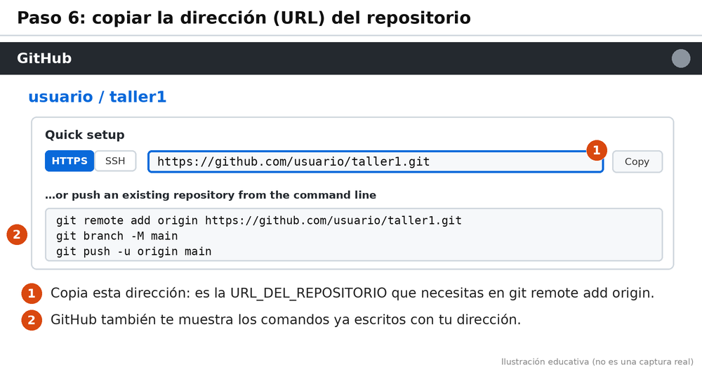
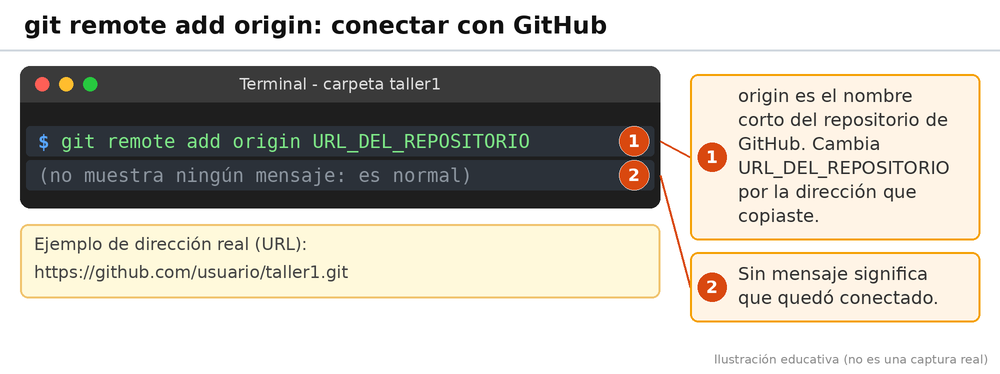
Finalmente, enviamos los archivos a GitHub con el siguiente comando.
git branch -M main
git push -u origin main
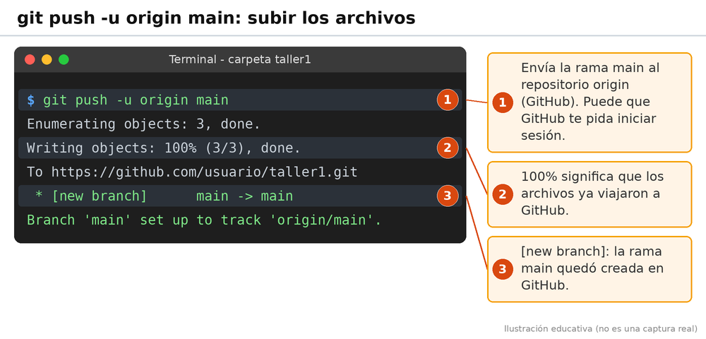
Si los comandos se ejecutan correctamente, podremos entrar a nuestro repositorio de GitHub y ver los archivos que hemos subido.
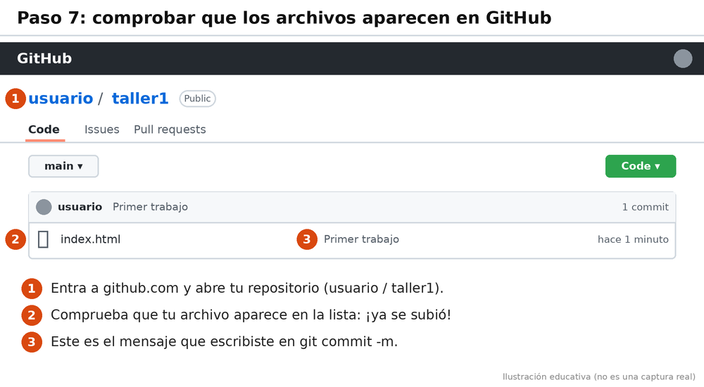